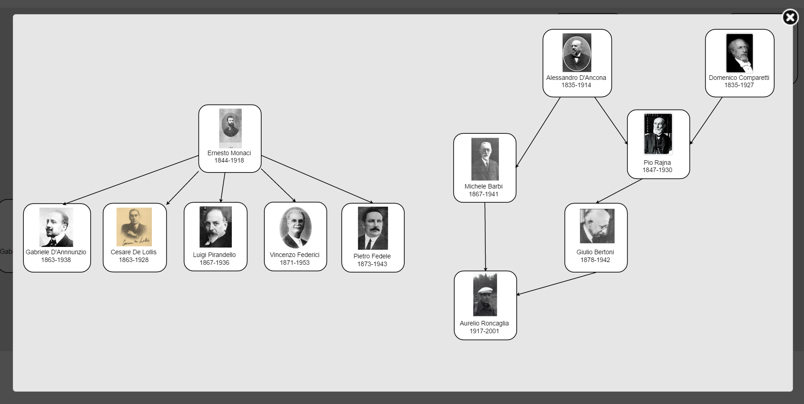

Laboratorio Monaci
Materiali dall'archivio di Ernesto Monaci
Il Laboratorio Monaci si propone di valorizzare i materiali del Fondo Monaci,
conservato presso la Società Filologica Romana.
Il Fondo contiene le
carte di Ernesto Monaci, filologo romanzo, primo ad occupare la cattedra
(allora, Storia comparata delle lingue neolatine) all'Università Sapienza e
fondatore della Rivista di filologia romanza.
Il Fondo è stato
catalogato da Monica Calzolari nel 2005 (catalogo consultabile nel
monografico della rivista Studj Romanzi). Vi si trovano appunti
scientifici, materiali didattici, documenti e un ricchissimo epistolario.
Proprio dai carteggi si è voluto partire nell'analisi del Fondo. Essi
sono già stato oggetto di alcuni studi ed edizioni parziali (vd. Bibliografia), ma rimangono in buona parte inediti ed
inesplorati → Vd. carteggi.
L'epistolario
ci permette di cogliere in tutta la loro vitalità alcuni aspetti di un
periodo così fondamentale per la storia della filologia romanza → Vd. storia della filologia romanza.
Il
Laboratorio Monaci è un'iniziativa del Dipartimento di Studi
Europei, Americani e Interculturali e del Dottorato di ricerca in Scienze del Testo dell'Università Sapienza.
Storia della filologia romanza. Materiali ausiliari
-
I protagonisti. Gli allievi e i maestri
 -
Le Riviste
Cronologia delle più antiche riviste europee dedicate alla romanistica (dal 1870 alla fine del secolo). Vd. Ruggieri 1969.
- 1870 Revue des Langues Romanes, della Société pour l'ètude des Langues romanes
- 1872 Romania, di G. Paris e P. Meyer
- 1872 Rivista di Filologia Romanza fondato da Monaci, Stengel e Manzoni, poi solo Monaci
- 1873 Archivio Glottologico Italiano fondato da Ascoli
- 1877 Zeitschrift für romanische Philologie di Gröber
- 1881 Romanische Forschungen di Vollmöller
- 1883 Giornale Storico della Letteratura Italiana di Graf, Renier e poi di Navati
Bibliografia
La bibliografia del Laboratorio Monaci è raccolta nel gruppo pubblico Laboratorio Monaci di Zotero.
Chiunque può partecipare al gruppo e contribuire alla bibliografia:
- creando un account Zotero e iscrivendosi al gruppo
- inviando una mail con l'indicazione di una nuova fonte bibliografica a Nadia Cannata nadia.cannata@uniroma1.it
La bibliografia completa di E. Monaci si trova in: Ernesto Monaci: l’uomo, il maestro, il filologo. Roma: Società filologica romana, 1920.
La bibliografia su E. Monaci si trova raccolta in: Calzolari, Monica, Il fondo archivistico Ernesto Monaci (1839-1918) e l’archivio storico della Società filologica romana (1901-1959). Roma: Società Filologica Romana, 2005.
Attività, pubblicazioni e credits
Coordinatrici
Nadia Cannata, Arianna Punzi
Pubblicazioni e partecipazioni a convegni
- Vincenzo D'Angelo, “Note linguistiche sui carteggi accademici di Ernesto Monaci”, in Studj romanzi IX (2013). [leggi]
- Arianna Punzi, "«Non ebbi la ventura di essere suo discepolo». Lettere di Luigi Schiaparelli a Ernesto Monaci", in Studj romanzi X (2014). [leggi]
- Elena Spadini, "A spoonful of sugar: encoding and publishing in the classroom", DiXiT Workshop - Conferenza AIUCD, Roma, 24 gennaio 2017 [abstract]
- Marco Veneziale, Progetto Archivio Monaci, Presentazione di progetti di ricerca in corso (Verona, 13 settembre 2014), Società Italiana di Filologia Romanza [leggi]
- Marco Veneziale, "Novità dall'Archivio Mussafia", CILFR 2016. [pagina convegno]
Edizione digitale e Pubblicazione web
Responsabile: Elena Spadini
Attività didattica
- Laboratorio Monaci (tecniche di edizione digitale) - Tirocinio/Altre attività formative - 2 cfu - primo semestre a.a. 2016-2017: Elena Spadini [vedi materiali corso]
- Laboratorio Monaci (tecniche di edizione digitale) - Seminario per Dottorato di ricerca in Scienze del Testo (12 ore) - a.a. 2016-2017: Elena Spadini [vedi materiali corso]
Trascrizione carteggi
Vincenzo D'Angelo, Roberto Del Grosso, Ilaria Iacona, Ilaria Lavorato, Maria Teresa Prota, Maria Teresa Rachetta, Elena Spadini, Marco Veneziale.
Codifica carteggi
Sabrina Artale, Veronica Aurizi, Arianna Calcagnini, Marta Carpiceci, Chiara Cocciarelli, Martina D’Arcangelo, Daniele De Sanctis, Elisabetta De Vergori, Francesca Iacuzzo, Ilaria Lavorato, Martina Liaci, Arianna Moretti, Maria Teresa Prota, Naomi Secci, Elena Spadini.
Contatti
Per informazioni riguardanti il Laboratorio Monaci, contattare
Nadia Cannata nadia.cannata@uniroma1.it
Arianna Punzi arianna.punzi@uniroma1.it